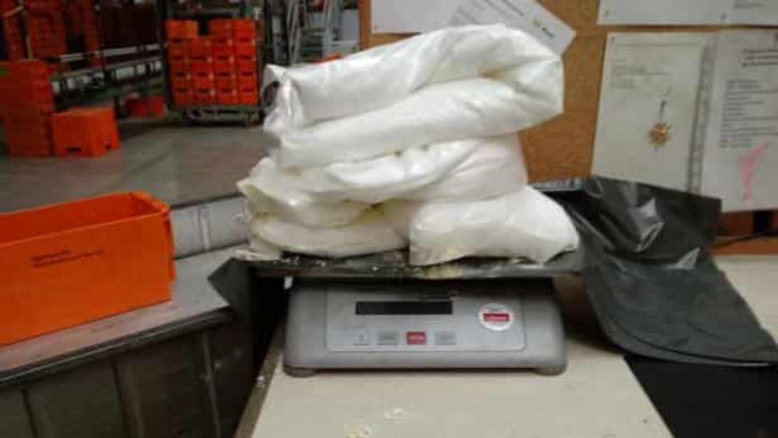
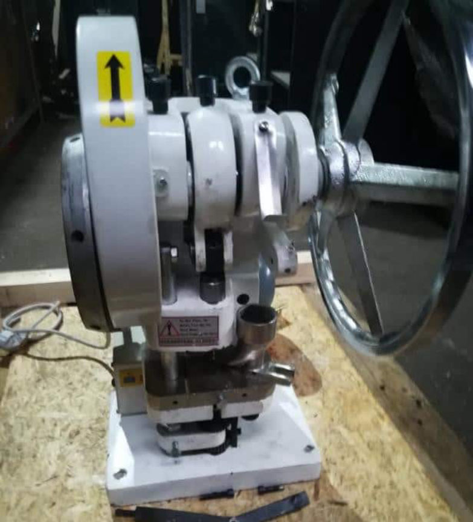
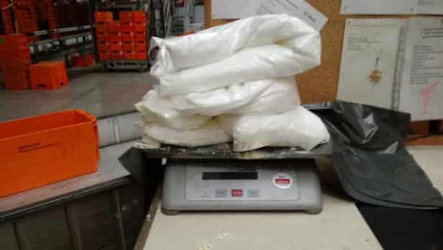
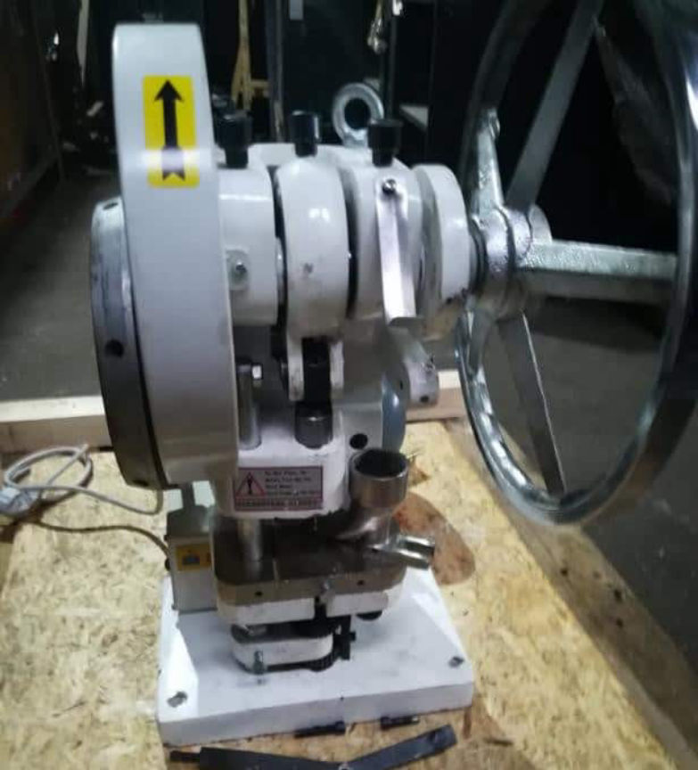

Austrian Police Bust Large-Scale Drug Trafficking Ring
~2 min read | Published on 2019-12-04, tagged Arrested, Darkweb-Vendor, Drug-Bust, Drugs using 474 words.
Police in Austria shut down a large-scale drug trafficking organization that conducted operations electronically. According to the police, the group purchased drugs on the darkweb and resold them to customers locally through messaging applications. The group used drops and never physically interacted with their customers.
This week, the Vienna State Office of Criminal Investigation held a press conference concerning the investigation and arrest of this so-called “new generation” of drug dealers and drug distribution. Officials highlighted the group’s use of electronic devices and digital communication. They also called the group’s operation “new generation” drug trafficking.
Three of the main suspects are in police custody. One, a 24-year-old, led the operation, investigators said. He purchased drugs on various darkweb marketplaces using cryptocurrency. He had the packages shipped to abandoned buildings and empty apartments throughout Vienna. Two of his co-conspirators, a 19-year-old and a 22-year-old, helped pick the packages up and transport them to specific stash spots.
During raids at a number of these stashes, police found 16.5 kilograms of methamphetamine, 1.5 kilograms of MDMA, half a kilogram of cocaine, and more than one kilogram of ketamine. They valued the seized drugs at 350,000 euros. One of the locations housed an industrial pill press as well as more than 100 kilograms of related equipment.
The investigation began in early 2019 after Customs seized five packages of MDMA and methamphetamine. Darkweb vendors in the Netherlands had shipped the packages to the 24-year-old, investigators said. After that package siezure, law enforcement started an investigation into a large-scale drug trafficking operation.
During the course of the investigation, the authorities learned that the suspected drug dealers did not interact with customers in person. Instead, customers would message the dealers with their order and receive GPS coordinates to a drop with the drugs they had requested. All communication between customers and the dealers took place over undisclosed messaging applications. The dealers, after receiving the message, would hide the requested drugs at random locations in Vienna, such as public parks or forests. They also hid small packages under loose garbage or trash in the woods. Customers, after finding the drugs at the coordinates they had received, would leave cash in place of the drugs. Certain co-conspirators would return to the spot later and retrieve the cash.
Law enforcement arrested the 24-year-old and 19-year-old after they attempted to retrieve a package at the post office. Authorities had learned ahead of time that the package contained 14 kilograms of amphetamine. They later arrested the 22-year-old suspect. All three are in custody.
“Organized crime has long recognized that it can profit through online commerce,” an official said. “In the past criminal energy was needed to get drugs, now every 16-year-old can deliver drugs to the farthest corners of Austria.” The police promised to continue investigating darkweb drug crimes.
This week, the Vienna State Office of Criminal Investigation held a press conference concerning the investigation and arrest of this so-called “new generation” of drug dealers and drug distribution. Officials highlighted the group’s use of electronic devices and digital communication. They also called the group’s operation “new generation” drug trafficking.
Three of the main suspects are in police custody. One, a 24-year-old, led the operation, investigators said. He purchased drugs on various darkweb marketplaces using cryptocurrency. He had the packages shipped to abandoned buildings and empty apartments throughout Vienna. Two of his co-conspirators, a 19-year-old and a 22-year-old, helped pick the packages up and transport them to specific stash spots.
Cocaine Seized During the Raid | LKA
During raids at a number of these stashes, police found 16.5 kilograms of methamphetamine, 1.5 kilograms of MDMA, half a kilogram of cocaine, and more than one kilogram of ketamine. They valued the seized drugs at 350,000 euros. One of the locations housed an industrial pill press as well as more than 100 kilograms of related equipment.
The investigation began in early 2019 after Customs seized five packages of MDMA and methamphetamine. Darkweb vendors in the Netherlands had shipped the packages to the 24-year-old, investigators said. After that package siezure, law enforcement started an investigation into a large-scale drug trafficking operation.
During the course of the investigation, the authorities learned that the suspected drug dealers did not interact with customers in person. Instead, customers would message the dealers with their order and receive GPS coordinates to a drop with the drugs they had requested. All communication between customers and the dealers took place over undisclosed messaging applications. The dealers, after receiving the message, would hide the requested drugs at random locations in Vienna, such as public parks or forests. They also hid small packages under loose garbage or trash in the woods. Customers, after finding the drugs at the coordinates they had received, would leave cash in place of the drugs. Certain co-conspirators would return to the spot later and retrieve the cash.
A Pill Press Seized During the Raid | LKA
Law enforcement arrested the 24-year-old and 19-year-old after they attempted to retrieve a package at the post office. Authorities had learned ahead of time that the package contained 14 kilograms of amphetamine. They later arrested the 22-year-old suspect. All three are in custody.
“Organized crime has long recognized that it can profit through online commerce,” an official said. “In the past criminal energy was needed to get drugs, now every 16-year-old can deliver drugs to the farthest corners of Austria.” The police promised to continue investigating darkweb drug crimes.